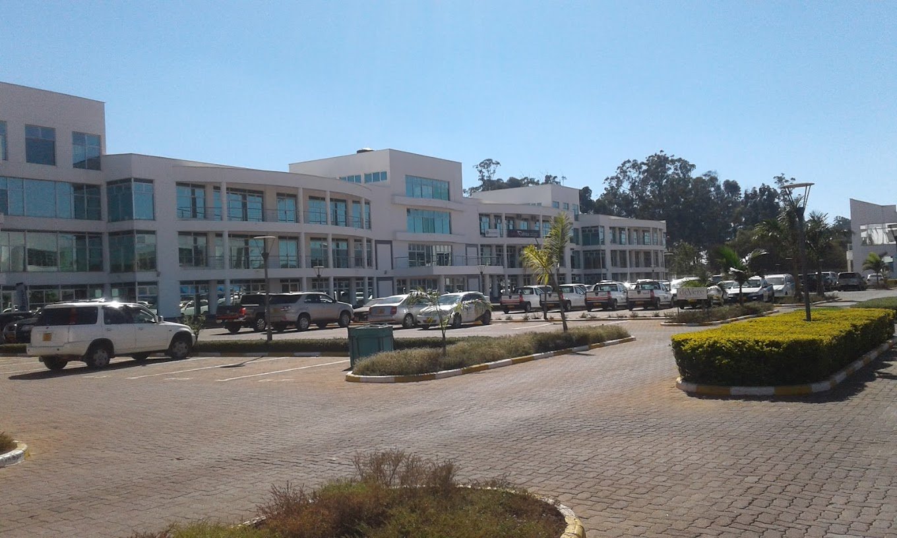

The Zimbabwe Land Commission (ZLC) is a statutory body which deals with most all matters pertaining to the acquisition, auditing, administration, allocation, arbitration as well as alienation [partial as well as entire] of agricultural State Land in Zimbabwe.
ZLC's mandate is set forth in sections 296 and 297 of the Constitution of Zimbabwe [Amendment (No.20)Act, 2013]. Said mandate is further fleshed out in the Land Commission Act [Chapter 20:29] which commenced in February 2018.
It is prudent to give the Land Commission Act [Chapter 20:29] a serious and studious read, if only because agricultural State Land is a favored playground of the dreaded "land barons" and the scams they enjoy foisting on unsuspecting marks. For instance:
Knowledge of sections 17, 23, 24, 25, 26 outline the tenure documents issued by the Ministry of Lands in consultation with the ZLC for lawful occupation of allocated agricultural State Land after having adhered to strict application protocol, as well as the criteria for determination of suitability of applicants.
Section 2 of the Act, when interpreting the term "alienate", names the valid tenure documents when dealing with the allocation, occupation or alienation [partial or entire] of agricultural State Land. The tenure documents in question are, "ninety-nine year lease, lease with a purchase option, permit, offer letter or deed of grant."
-Section 28 of the Act specifies that save for the holder of a deed of grant and one who has satisfied all the terms and conditions set forth in the Fourth Schedule of the Act [pertaining to the holder of a lease with a purchase option] holders of the other tenure documents [i.e. ninety-nine year lease, permit or offer letter] have only what are referred to as, "partially alienated state land rights", and as such, are not allowed to cede, lease, mortgage or dispose of their "partially alienated state land right." for valuable consideration. As subsection 2 of section 28 attests, "A transaction entered into by a lessee in contravention of subsection (1) shall be of no force and effect."
Part VIII of the Act [sections 38 to 42] is arguably the "ace in the hole" against agricultural land barons, as it relates that there is a "Register of Partially Alienated State Land Rights" kept at the head office of the Ministry of Lands, and that, upon following the laid out protocol/procedure, one may inspect the registry or otherwise request for information pertaining to an entry from the Registrar of Partially Alienated State Land Rights. Thus, for instance, if a land baron is able to fabricate a deed of grant, or a deed of transfer [as well as the attendant certificate of no present interest], and, upon searching at the relevant Deeds Registry, one finds no registry copy, [and they do not find a custodial copy of the certificate of no present interest at the head office of the Ministry of Lands, or it is found to be ersatz] they may make search or inquiry at the Registry of Partially Alienated State Land Rights, and if the name of the would-be “freeholder” is found in that registry, one would have nabbed a land baron before they would have been swindled.
-On and on, and deeper and deeper do the mining of the riches of this Act go. Ergo, please do thyself a favor, and give the Land Commission Act [Chapter 20:29] a sedulous read; one will not regret it.
Completed the first 5 year roung of Audit by Auditing aproximately 254 000 subdivisions
2024Land Tenure
The Commission is manadeted to carry out the following functions
Voluptate minus illo tenetur sint ab in culpa cumque impedit quibusdam. Saepe, molestias quia.Voluptate minus illo tenetur sint ab in culpa cumque impedit quibusdam. Saepe, molestias quia.Voluptate minus illo tenetur sint ab in culpa cumque impedit quibusdam. Saepe, molestias quia.
To ensure fairness, transparency and accountability
in the administration of land for improved livelihoods
A center of excellence in equitable and sustainable
land administration and management